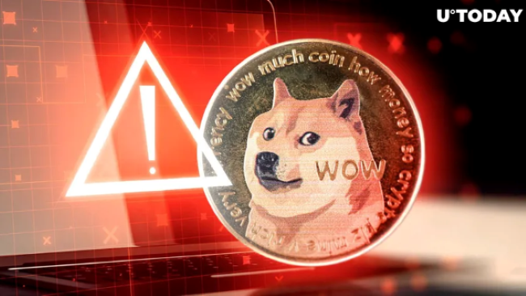

Dogecoin Menakut-nakuti Investor. Inilah Alasannya.
Dogecoin awalnya dibuat sebagai lelucon lucu oleh insinyur perangkat lunak Billy Markus dan Jackson Palmer pada tahun 2013, Dogecoin terinspirasi oleh meme populer “Doge” yang menampilkan seekor anjing Shiba Inu. Seiring berjalannya waktu, minat terhadap mata uang kripto telah melonjak secara tak terduga, didukung oleh dukungan dari tokoh-tokoh seperti Elon Musk, perusahaan-perusahaan besar, dan pencatatannya baru-baru ini di Nasdaq melalui Coinbase.
Misalnya, Slim Jim, yang terkenal dengan stik dagingnya, telah mengadopsi strategi resmi Dogecoin, yang berkontribusi pada kenaikan pesat mata uang kripto tersebut. CEO Slim Jim, Sean Connolly, mengakui peran Dogecoin dalam pertumbuhan media sosial mereka selama panggilan pendapatan.
Nilai pasar Dogecoin sekarang mencapai hampir $50 miliar, dengan harganya melonjak hingga 39 sen, lebih dari dua kali lipat hanya dalam sehari.
Namun, beberapa investor memperingatkan bahwa hype seputar Dogecoin dapat menyebabkan bubble. Mereka berpendapat bahwa orang-orang membeli mata uang kripto bukan berdasarkan nilai bawaannya, melainkan dengan harapan mendapatkan keuntungan ketika orang lain ikut bergabung. Analis, seperti David Kimberley dari Freetrade, memperingatkan risiko yang terkait dengan perilaku spekulatif ini, dan menekankan sifat yang tidak dapat diprediksi. kapan gelembung itu mungkin pecah.
Sumber: www.entrepreneur.com/business-news/dogecoin-is-scaring-investors-heres-why